proto-geo archive
One day, I accidentally deleted my weblog. Partial restoration, sans-comments, below.
exquisite compilations
Saturday, December 6, 2008
I just can't get away from lust-worthy information visualization today. CityMurmur is a Spanish project that uses OpenStreetMaps as a framework for displaying media data streams. Semantic (topic & type) and geographic (scale) filters refine the default view, while an interactive legend offers deeper drilling. Hint: don't forget to close the filter panel since it obscures central Madrid.
Actually, all the projects in MediaLab Prado Visualizer '08: Database City are pretty interesting.
Then, lest we forget that everything Stamen touches turns to gold, there's this nice Contagious article to remind us.
permalink
Culinary chronology
Tuesday, December 2, 2008
Ugly, but easily-navigated and stupendously meticulous: The Food Timeline. Who knew eel flan was big in Ancient Rome?
permalink
¿De dónde viene Cabrales?
Wednesday, November 26, 2008
Drunken goat is from Murcia, Mahon from Las Islas Baleares, Valdéon
from Castilla y Leon...Manchego, of course, is DO La Mancha. And
peppery, crumbly, sour, creamy and delectable Cabrales is from Asturias.
permalink
Good reading
Tuesday, November 25, 2008
An interview with Mark Newman on the newly released Atlas of the Real World has been one of the top stories on NPR for a couple of days now. More interesting than the atlas itself (essentially hard-copy Worldmapper) is the technique they use to produce their maps. This article
provides a concise overview of previous approaches and an introduction
to their diffusion-based method. The algorithm is described first in
terms of macroscopic variables*, but I find this second explanation
especially logical and poetic:
...one could equally look
at the method as a microscopic diffusion process in which each
individual member of the population performs a Gaussian random walk
about the surface of the map. Over time the population will diffuse
until it is uniform everywhere within the box enclosing the map, except
for statistical fluctuations. The cartogram is derived by moving all
boundaries on the map in such a way that the net flow passing through
them is zero at all times during the diffusion process. This resembles
Dorling’s [cellular automata] method in the sense that different
regions trade their area until a fair distribution is reached.
Gastner,
MT and Newman, MEJ. Diffusion-based method for producing
density-equalizing maps. Proceedings National Academy of Sciences. USA.
101, 7499–7504 (2004).
After I first saw
Worldmapper, I tried using an ArcMap script to generate cartograms for
a class project. It was arduously slow, the results were visually
incoherent, and I abandoned the idea. So I'm actually not just feigning
appreciation, promise.
*macroscopic equations describe the behavior of a system as determined by the collective and somewhat abstracted behavior of its components
whereas
microscopic equations
handle the most elementary components of a system individually in order
to then compile them into the total representation of behavior
(or that's what I gathered from a quick read here (p.203), though I'm entirely uncertain about my interpretation!)
Also not to be missed: Does data art conceptually misconstrue information by hiding the artist's agency in visualization?
It's interesting to consider the aesthetic and editorial choices that
lay behind purportedly transparent representations. Even if you have no
patience for art critique, it's a nice survey of artists working in
this vein.
permalink
Geowankers hash it out...
Monday, November 24, 2008
I took Kate's advice and watched this YouTube autobiography-of-sorts yesterday. I guess the geographic equivalent might be something like this?
Anyhow, as long as the Geowankers
archive is down, techno-anthropologists are missing a fascinating
Geography identity crisis on the mailing list. These discussions are a
pretty periodic occurrence (e.g. this post).
Sure, many of the same arguments are repeated every time, but it's
engrossing and informative for anyone with a an academic/professional
perspective as nescient (but curious!) as my own.
This one began with a call for suggestions on a potential Where2.0 panel (tentatively?) titled Neogeographers meet Paleogeographers.
I copied and pasted all the e-mails into a single document while I made
my nightly Skype calls. I'll post it when the thread dies, but until
then, here's the gist of it.
I
left the dates in, because I thought the time-stamp would be nice, but
I guess Wordle doesn't process numbers. I was hoping "2008" would come
out as one of the larger words, with "Nov", "23" and "24" in the mix.
Oh well.
Et Voila.
Here is the thread, chunked up to satisfy the Google Docs file size limit:
Part I Part II
I also revised the Wordle and figured out how to include the dates by inserting tildes before the numbers. Or jpeg.
permalink
WOW:
Sunday, November 23, 2008
Dance your PhD. Hydrodynamic trail detection in marine organisms. The role of an IGFBP in breast cancer.
permalink
Did you forget how much you like Neil
Young?
Saturday, November 22, 2008
Totally off-topic, but I couldn't resist: the LINC VOLT. So maybe experts doubt GM's ability to save the American auto-industry with their Volt, but what about this: a large-scale, Detroit-based assembly-line to retrofit old cars! Via Spatial Sustain.
permalink
Kaki/Caqui
Saturday, November 22, 2008
I've been meaning to write a post about my currently favorite D.O.
Valencian product: kakis. I tried kakis last fall and learned not to
eat them until they were incredibly soft, like overripe tomatoes. I
always thought the hard, light orange ones I saw were simply unripe,
but then I saw them advertised as "crujiente," crunchy. So I cut one
open, and braced myself for the astringent chalk-pucker that unripe
kakis supposedly induce. It was nice. More creamy and dense than the
ultra-juicy soft variety. The official website
of the regulator confirms that both the hard "persimon" variety and the
soft "classic" variety are covered by the D.O. label. To sum up:
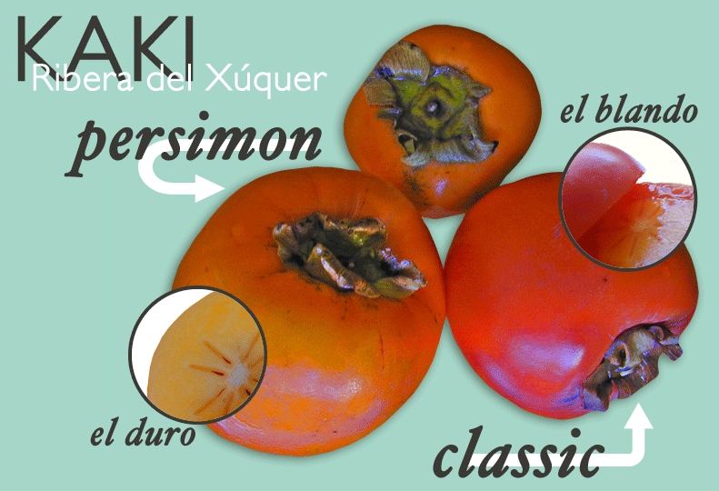
permalink
"Panoramio del pasado"
Friday, November 21, 2008
Yeah, it's pretty empty thus far...But what a fantastic idea & well-executed interface: HistoGrafica. Gracias, otra vez, a alpoma.
permalink
2 legit
Thursday, November 20, 2008
Up2Maps was just released today. In the vein of Maker!,
it aims to offer online geovisualization & publishing. The
interface is pretty clean and intuitive, but I can't say too much about
the functionality as it doesn't appear that the My Maps (this isn't
trademarked?) tab is implemented yet. The data input
is designed for thematic mapping, allowing users to attach spreadsheets
to features - either with a "Data Greed"(!) or by manual (yawn) entry.
My
tentative kvetch: I don't see how you can use data that others have
input, as it seems each "report" starts with a bare map and that the
only export options are .png images. I hope I'm missing something?
Ultimately,
what makes Maker! brilliant is that it's paired with Finder!. Together
they facilitate extremely user-friendly data discovery, access and
reuse...but, in doing so, set a high bar for other applications.
permalink
Usability rant
Thursday, November 20, 2008
If you, by any chance, had a question about Cartografica
(can I add WMS servers?), after you downloaded the free preview this
morning, you might feel my pain. The help menu is kind of skimpy, but
that wouldn't deter you - maybe something online? Nothing promising on macgis.com, where you downloaded the demo. You might perform a search on Google and find this. What a thorough survey, you'd think, maybe cartografica.com has some substantial information. You wouldn't hold it against anyone that the download page was hosted on a different domain with no link, just an oversight.
Shucks,
no documentation and the forums are empty. Still, perfectly
understandable for a project is in it's infancy. So maybe you'd just
register. Only this presents a small conundrum.
Aww. Poor guys, a little glitch. You understand that, because maybe
you've tried designing a website recently (haha). You'd think that you
should help them out, let them know about the bug since they probably
have a lot of visitors on this, the first day of their release. So:
contact. Where's the link? Ohh! No link. Maybe hidden on some other
page? Nope...Doesn't it kind of feel like you're being taunted by that
slogan on the banner?
Maybe you could post a comment, I mean, they should know about this, right? Ohh! No posting 'til you register.
Well then.
permalink
You are here.
The pinnacle of geekery
Wordpress site
Wednesday, November 12, 2008
I've set up a site
and skidded through a crash course on GeoXML, Geopress, and Wordpress.
Dreamweaver became a little unwieldy, so I've been using a razor-sharp
combination of CSSEdit, BBEdit, and Firebug.
I
realize that the new site looks kind of empty - it's really just my CSS
tweaks on a Wordpress template. But it has a lot more structure to work
with than what I had with the first site. Oh, and no more "Farm2.0," as
fun as that was. AlimentaValencia works well for now. alimentar verbo transitivo
1. ‹persona/animal› to feed
2. a. ‹ilusión/esperanza› to nurture, cherish;
‹ego› to boost
b. ‹odio/pasión› to fuel
3. ‹máquina/motor› to feed;
‹caldera› to stoke
verbo intransitivo
to be nourishing
Meanwhile, getting completely sidetracked here.
permalink
And the winner is...Robert Palmer?
Wednesday, November 12, 2008
Gary Becker, after doubtlessly brilliant studies on gambling, consumption, cigarettes, and drugs, believes people are the most addictive thing on Earth.
Very sweet but kind of groan-inducing. Comments 1 through about 11 are
hilarious and astute. Then, as usual, it gets redundant. And someone is
still stuck on air. Ugh.
permalink
Addiction
Tuesday, November 11, 2008
"What is the most addictive thing on Earth ?"
Steven Levitt asked yesterday. Levitt was initially dubious about Nobel
laureate economist Gary Becker's "most addictive good," but now
endorses the expert's judgment and challenges his readers to give it a
stab. Readers' responses fall largely into three main categories:
Things people need
- namely oxygen, food, water, sleep. These answers don't distinguish
between "critical" and "addictive," instead opting to uncover a clever,
trick answer from the array of physiological human necessities.
Things that are demonstrably addictive
- e.g. gambling, sex, sugar, cigarettes. These range from substances
that are extremely addictive in a physical sense, like heroin, to
addictive behaviors such as shopping. While the medical community will
be perpetually hashing out the scientific validity of these addictions,
I'm inclined to just accept them all as potential contenders. The
problem is that they're highly personal answers - no one would deny
that coffee is addictive, but
it surely isn't the most addictive thing on Earth. I've watched many a
friend struggle desperately with nicotine addiction, for example, but
was myself able to stop smoking cold turkey with nary a craving. (Which
is definitely not to imply that I don't have my own battles, ahem,
Scrabulous...)
Outliers -
or everything I am too lazy to categorize. Many of these are abstract
concepts such as happiness, power, and greed. Others are simply quirky
confessions: World of Warcraft, checking myspace, Chik-Fil-A, season 2
of The Office, fivethirtyeight.com. Others are really, really, just
outliers - some funny, some baffling: indoor plumbing, Nobel prizes,
"Easy Access to Information so you don’t have to think [sic]," "utility
maximization," story, etc.
Admittedly, I was too busy ruling out answers to come up with a good one of my own.
What
surprised me, though maybe it shouldn't have considering the particular
Freakonomics-blog-audience, was the number of people who said
information/access to information/instant information. I would hardly
try to convince anyone that this is the most addictive thing on Earth,
but it's definitely a weakness I relate to at the moment.
permalink
Maya Lin's shiftable maps
A great post
Sunday, November 9, 2008
City Maps As A Rorschach Test. I, too, quickly conjured the Albanian flag from the Dallas silhouette.
permalink
Measuring the drapes?
Friday, November 7, 2008
I promised myself today I'd get back to work on my thesis, but I really couldn't let the launch of change.gov
go by unacknowledged. It's no news that Obama's campaign has been
extremely tech savy - incredibly productive social networking,
outrageous amounts of online donations, crisp design and usability - even GIS for change(whoa!).
A stark contrast to McCain, who claims he has "never felt the particular need to email."
Yet
even if you saw it coming, it's pretty cool that change.gov is already
deployed. From first glance, it's notable that they are soliciting input, articulating their agenda, and hiring.
Sure, it feels a bit gratuitous and thus far lacks much substance. The
GSA Transition link that appears on every page, for instance, directs
to an off-site tangle of PDF files, many of which don't really seem to
reflect any sort of transition and simply list posts from the current
administration.
Still, an federal administration that harnesses the power of the net-roots is a pretty awesome prospect.
permalink
Texas: back to blue?
Wednesday, November 5, 2008
We 80's babies have always known Texas as mound of electoral votes
automatically handed to the GOP, but it was not always so. Texas was
once a bastion of blue, part of the "Solid South." (Here's your historical election map carto-refresher.)
Come 2004, however, we all knew Texas would go red.
I
have a vivid recollection of that election night: About 70 people in
our house, tons of vegetarian Tex-Mex snacks, a keg of Real Ale
supplemented by a fridge full of Lone Star - we even brought out the TV
for the occasion...It's painful to remember how confidently we were
expecting to celebrate the toss out of you-know-who. As the night wore
on and the whole disaster unfolded, I kept catching flashes of the
Texas map on the news. There it was, my first vote in a presidential
campaign, stranded on the little blue island of Travis county amidst a
hopeless wash of crimson.
Obviously, I learned my lesson and re-registered in NM this time around.
Nonetheless, it warms my heart to see the Texas county map this year.
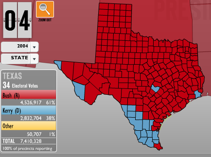
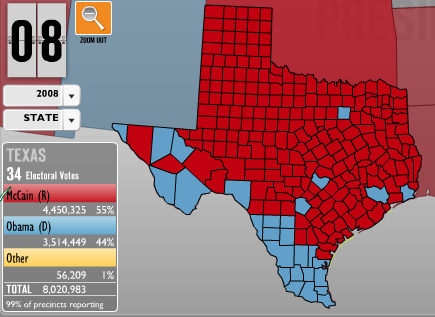
Besides
scoring a bluer frontera, Obama also reigned in Dallas, Houston, and
San Antonio. Even Clinton, who also mustered 43.8% in '96, missed the
metros.
permalink
¿Y por aqui?
Wednesday, November 5, 2008
Zapatero: "...la victoria electoral de Barak Obama abre un nuevo periodo de esperanza..."
Comments on elpais.com, Re Bush's "smooth transition" outreach: "Lo
mejor sería que no hiciera absolutamente nada, que se vaya a su rancho,
que invite a Aznar y se dediquen durante un par de mese a la caza." (It would be best [for Bush] to do absolutely nothing, for him to go to his ranch and invite Aznar and they could hunt for a couple months.)
permalink
Which is a better map?
Monday, November 3, 2008
Two approaches to the same information:
Local Poll Closing Times - CNN.com
Poll Closing Times - NYTimes.com
dynamic v. static
single map v. multiples
numeric/literal temporal symbols 6 p.m. v. graphic temporal symbols clock faces
generalization choices
selection time zones? Alaska & Hawaii? state name labels?
simplification both assign a color symbol per-state; CNN acknowledges intra-state variation (e.g. Indiana) with a mouse-over detail.
Etc.:
The bar on the right hand side of the CNN map is a little strange
looking, but does a good job of dealing with ever-troublesome, cramped
Northwest labeling (no arrows necessary). It also makes mouse-over info
windows more accessible for small states like Delaware.
What about these?
Swing State Project's map, though completely static, shows an great deal of information with impressive legibility.
Talking Points Memo's map flash map is dynamic to the degree that it shows no
polling time information without the user mousing over the time bar at
the top - a little counter intuitive for me since I usually expect
flash maps to react movement above the geographic features themselves.
Interesting effect from the beige(open)/green(closing)/grey(closed)
palette as one moves across the bar.
Is 1.0 retro-chic yet? Check out 2004.
permalink
Unbelievable anxiety + procrastination
Tuesday, November 4, 2008
Thanks for the compassion,
William Kristol. But lets face it: If this gets screwed up, I'm not
going home unless California secedes. Or maybe Northern NM could become
New New Mexico? Faithy does claim that Obamanos
is HUGE in Española. And she would know - here she is advising Mr.
Obama earlier this fall (might have to enable pop-up windows for the
player):
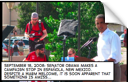
Now look who's up 7 percentage points. That's what happens when you do what my sister tells you to.
(in case you need clarification: Hillary's health plan, the Scoville scale, Horseman's Haven, level three...)
For anyone else who's abroad without TV, the Times promises to update their map every 3 minutes, and this should help sort out time differences.
permalink
Great presentations
Friday, October 31, 2008
My father always told me, "Absolute power corrupts, absolute PowerPoint corrupts absolutely."
Hypocritically, of course, since he is a veteran Keynote user himself.
I have a vivid recollection of sitting in on some sort of investors
meeting where my father closed his presentation with a clip of the Globe scene from the Great Dictator. Did I mention he replaced the audio with Cantaloop
and started dancing "funky" along with a couple of his board members?
I'm sure I found it mortifying at the time, but I appreciate his little
mash-up in retrospect. And am sure everyone else in the audience...Well
I'm sure they didn't fall asleep.
Unfortunately, this past year I've seen a lot of slides like this, slides that I would go so far as to say harm
their cause. Doesn't interoperability look like a nightmare? Piles of
clip art do not exactly make a nice visual metaphor for standard-driven
data overlays.
Which is a perfect segue into announcing the best presentation I've seen in a long time: Dave Bouwman's Usability in the Geoweb
presentation from the Texas GIS Forum. The presentation communicates a
concise, convincing argument with smart, humorous, clean design. Sadly,
this is the third year in a row that I have missed the forum. It's
organized by TNRIS, my former
employer, and while I suppose I could derive consolation from my
various editions of GIS Forum totes and water bottles, I'm still a
little envious...
On the other hand, I was able to watch Andrew Turner's excellent webcast last week. They said they'd be posting the video, but until then, this should tide you over. Both presentations prompted me to check back in on geocommons.
I had played around with Finder when it was first released, but didn't
realize how much it has developed. And Maker really seems to be a
worthy model of the kind of applications Mr. Bouwman appeals for.
All this inspired me to upload some of my old presentations to Slideshare:
My undergraduate thesis from UT. Brace yourself. My awesome professor, Dr. Leo Zonn,
specializes in the geography of cinema. After a grueling semester of
intensive remote sensing and advanced GIS, I was absolutely reveling in
cultural theory. My take on it was little overboard maybe, but fun.
Makes me miss Wheatsville.
Some presentations that I made
for a history of interior design class I took with an extra credit that
same spring. These bring back especially fond memories since I was very
outnumbered by a swarm of Dallas/ Houston-bred Shopping- er, "Interior
Design" majors. We seriously took a field trip to Design Within Reach.
And some presentations from my past semester in Münster: Two on spatial cognition. A usability study. And a requirements analysis
for context adaptive digital signage (which was miserable to perform -
imagine me recording interviews about maps with German pedestrians).
Slideshare
is awesome. I kind of doubt there is much of an audience for any of
these, but who knows. They're much more useful there than simply saved
to a CD.
permalink
Wisdom of the folks as sensors;
tag-alicious-onomy
database design
Thursday, October 30, 2008
Here's a database design
I came up with the other day. Of course, if I use Wordpress, it would
look drastically different. Still a handy exercise to consider how my
data, attributes, and services are related. I'm loving the lauded 'polar bear book,' by the way.
permalink
Yes, we can...write a thesis
Wednesday, October 29, 2008
I know it might appear that the election is distracting me...but I am
hard at work. It's just that I'm trying a new approach to my whole
implementation, and developing locally - so there's not much to show
yet.
After my professor suggested putting more emphasis on the
consumer/tourist/chef end of the idea, I started to wonder if I wasn't
going to need a CMS to manage accounts, ratings, comments, and
user-contributed recipes. I spent a couple days trying to convince
myself I could learn Drupal (someday, not now) before considering
Wordpress. It's hardly a blogs-only platform - in fact many designers
use it to create more traditional websites so that their clients can
largely manage content themselves. Sounds ideal, since, in theory, I
would want to pass off authorship of the project to the regulatory
committees that certify products.
I spent several days sorting through all the Google Maps plug-ins, finally settling on Wordpress Geomashup. It seems to be the most flexible and is very well documented. (Bonus points because the developer maps his biking and hiking from Santa Fe.) This implementation guide is also highly recommended.
I'm
still not positive about the whole set up, but it does look promising.
With the shifted emphasis, the end user will probably be a cook rather
than a farmer. Consequently, the name "Farm2.0" is really misleading.
I'll try to come up with something equally hokey to replace it.
permalink
Guess who's reading Michael Pollan?
Wednesday, October 28, 2008
"...our
entire agricultural system is built on cheap oil. As a consequence, our
agriculture sector actually is contributing more greenhouse gases than
our transportation sector. And in the mean time, it's creating
monocultures that are vulnerable to national security threats, are now
vulnerable to sky-high food prices or crashes in food prices, huge
swings in commodity prices, and are partly responsible for the
explosion in our healthcare costs..."
permalink
Ha ha
Creative Cartograpies/DUMBO
Saturday, October 18, 2008
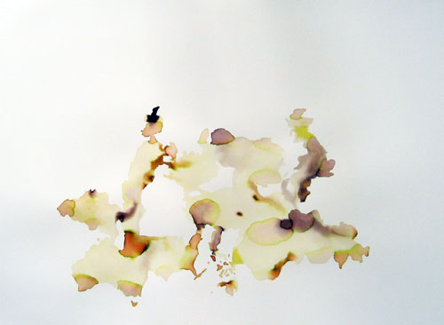
Rachelle Cohen, A New Eden?, 2008
I would love to see this exhibit in person.
I especially love Rachelle Cohen's
two "condensed" watercolors of conglomerate nations. She's produced by
them by arranging geometries of the statistically happiest and greenest
countries.
With the whole unexpected-embroidery-themes movement, you had to guess it was only a matter of time before someone did this:
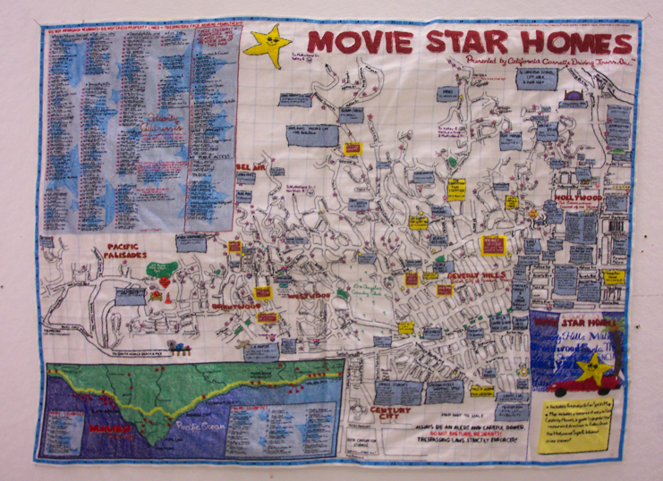
Gina Dawson, Movie Star Homes, 2005
But its great nonetheless, right? (In all fairness note that the piece is from 2005 when ironic crafting wasn't yet so trendy.)
Actually, the whole show looks interesting.
permalink
The other cybercartography...
Thursday, October 16, 2008
That is, the cartography of cyberspace. The book is out of print and
the project has been discontinued, but the authors have graciously made
the whole thing available for download under a Creative Commons license.
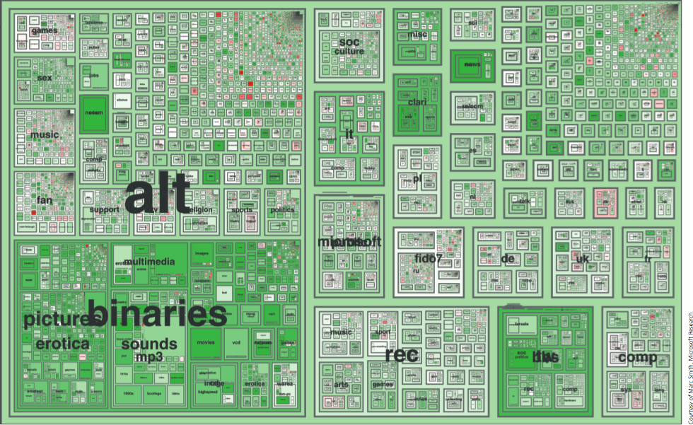
4.9: Netscan treemaps of Usenet space
chief cartographers: Marc A. Smith and Andrew T. Fiore
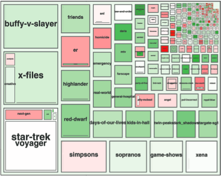
closeup of alt.tv
permalink
New video...
Thursday, October 16, 2008
Here's the latest version of my thesis slides...
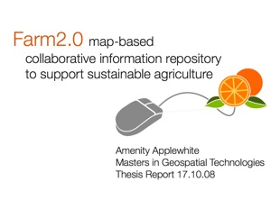
Here's the "demo" site.
I realize that this embedded blogger video is a tad speedy. But admit
it, you're glad you don't have to sit through the 15 minute long
presentation. I'll put it up in a better version after I go for a run.
Cheers!
permalink
Typefaces and such.
Monday, October 6, 2008
Up until this summer, I had an almost hysterical dedication to Gill Sans.
Working on collaborative projects involving lots of back and forth
document trading, it would pain me to use another typeface for my
non-Mac partners. I usually settled for Trebuchet to ensure they
wouldn't receive garbled dingbats. Sometimes I offered to complete
assignments I had already spent more than my share of time on just so I
could have the satisfaction of looking at the final printed product in
my favorite font.
For essays, of course, I grudgingly accepted the
12pt Times New Roman mandate. But on technical reports, cartography
assignments, resumes, and powerpoints, I rarely deviated from Gill
Sans. And when I look back at that work it does look nice, for it is a beautiful, Tufte-approved typeface.
But Germany changed me. I began to appreciate sparse, black on white presentations, and acclimate to ragged-edged alignment. I finally got my hands on the documentary
I had sought since catching a preview at MOMA last summer. Swept up in
the lore of Helvetica, I decided to take the plunge. I opened my
farm2.0 logo, took a deep breath, and descended my font menu. I think I
even winced as I passed Gill Sans.
Helvetica looked okay.
Helvetica-Neue looked great.
And Helvetica Neue Light looked phenomenal. Goodbye Gill.
Unfortunately, coordinating the CSS to be consistent between browsers and platforms
is really going to require some flexibility. Helvetica Neue won't show
up on Windows, as far as I can tell - but maybe Helvetica with weight
adjustments can approximate it? Furthermore, having just gotten this
site up, I'm starting to consider that I may have taken it all too far.
Helvetica Neue is dizzying in large blocks of text, isn't it? Should I introduce a complementary sans-serif? Would normal Helvetica be preferable?
Or maybe I should just GET ON WITH IT and work on my literature review. ;)
permalink
jerkied Universe anyone?
Friday, October 3, 2008
I was just reading an argument by Goodchild & Sui
that GIS now (or then, 2001) should be considered a form of media being
that its ultimate goal is to communicate. The perspective fits well
with my recent approach to my thesis, so I skimmed the document for
juicy propositions. Then I came across:Indeed, with the
emergence of digital places and digital individuals (Curry 1998), we
are witnessing not only Arnold Toynbee ’s etherization of history but
also the etherization of geography.
The
phrase has an interesting tone, so I Googled it to see if it had by any
chance sparked a flurry of citations. My findings were pretty thin -
this didn't seem to be another "citizens as sensors" moment for
Goodchild, and original texts by Toynbee weren't coming up. I was just
about to move on when - "etherealize toynbee" (the geographers seem to
have transposed some letters) brought up this.
Apparently Buckminster Fuller used the phrase "ephemeralization," and
Mr. Fowler associates this with Bucky's iconic tensegrity spheres,
"more easily caught with ever more ethereal than ever more transient
forms." Hm. It really is quite a poetic piece of correspondence - but
if it hadn't been CCed to my grandfather, I'm not sure I would have
been curious enough to read the whole thing. But it was, and I did -
thus uncovering this gem:I've no doubt that it seems as
if I'm chewing these jerkied terms over an [sic] over forever, getting
no juice out other than my own saliva. But that's what needs
doing.Moistening up dried and hardened (or, on the other hand, new)
terms, getting teeth in between the fibers, forcing them apart and
sensing Universe among them.
Whoa.
permalink
exquisite compilations
Saturday, December 6, 2008
I just can't get away from lust-worthy information visualization today. CityMurmur is a Spanish project that uses OpenStreetMaps as a framework for displaying media data streams. Semantic (topic & type) and geographic (scale) filters refine the default view, while an interactive legend offers deeper drilling. Hint: don't forget to close the filter panel since it obscures central Madrid.Actually, all the projects in MediaLab Prado Visualizer '08: Database City are pretty interesting.
Then, lest we forget that everything Stamen touches turns to gold, there's this nice Contagious article to remind us.
permalink
Culinary chronology
Tuesday, December 2, 2008
Ugly, but easily-navigated and stupendously meticulous: The Food Timeline. Who knew eel flan was big in Ancient Rome?permalink
¿De dónde viene Cabrales?
Wednesday, November 26, 2008
Drunken goat is from Murcia, Mahon from Las Islas Baleares, Valdéon from Castilla y Leon...Manchego, of course, is DO La Mancha. And peppery, crumbly, sour, creamy and delectable Cabrales is from Asturias.permalink
Good reading
Tuesday, November 25, 2008
An interview with Mark Newman on the newly released Atlas of the Real World has been one of the top stories on NPR for a couple of days now. More interesting than the atlas itself (essentially hard-copy Worldmapper) is the technique they use to produce their maps. This article provides a concise overview of previous approaches and an introduction to their diffusion-based method. The algorithm is described first in terms of macroscopic variables*, but I find this second explanation especially logical and poetic:...one could equally look at the method as a microscopic diffusion process in which each individual member of the population performs a Gaussian random walk about the surface of the map. Over time the population will diffuse until it is uniform everywhere within the box enclosing the map, except for statistical fluctuations. The cartogram is derived by moving all boundaries on the map in such a way that the net flow passing through them is zero at all times during the diffusion process. This resembles Dorling’s [cellular automata] method in the sense that different regions trade their area until a fair distribution is reached.After I first saw Worldmapper, I tried using an ArcMap script to generate cartograms for a class project. It was arduously slow, the results were visually incoherent, and I abandoned the idea. So I'm actually not just feigning appreciation, promise.
Gastner, MT and Newman, MEJ. Diffusion-based method for producing density-equalizing maps. Proceedings National Academy of Sciences. USA. 101, 7499–7504 (2004).
*macroscopic equations describe the behavior of a system as determined by the collective and somewhat abstracted behavior of its components
whereas
microscopic equations handle the most elementary components of a system individually in order to then compile them into the total representation of behavior
(or that's what I gathered from a quick read here (p.203), though I'm entirely uncertain about my interpretation!)
Also not to be missed: Does data art conceptually misconstrue information by hiding the artist's agency in visualization? It's interesting to consider the aesthetic and editorial choices that lay behind purportedly transparent representations. Even if you have no patience for art critique, it's a nice survey of artists working in this vein.
permalink
Geowankers hash it out...
Monday, November 24, 2008
I took Kate's advice and watched this YouTube autobiography-of-sorts yesterday. I guess the geographic equivalent might be something like this?Anyhow, as long as the Geowankers archive is down, techno-anthropologists are missing a fascinating Geography identity crisis on the mailing list. These discussions are a pretty periodic occurrence (e.g. this post). Sure, many of the same arguments are repeated every time, but it's engrossing and informative for anyone with a an academic/professional perspective as nescient (but curious!) as my own.
This one began with a call for suggestions on a potential Where2.0 panel (tentatively?) titled Neogeographers meet Paleogeographers. I copied and pasted all the e-mails into a single document while I made my nightly Skype calls. I'll post it when the thread dies, but until then, here's the gist of it.
I left the dates in, because I thought the time-stamp would be nice, but I guess Wordle doesn't process numbers. I was hoping "2008" would come out as one of the larger words, with "Nov", "23" and "24" in the mix. Oh well.
Et Voila.
Here is the thread, chunked up to satisfy the Google Docs file size limit:
Part I Part II
I also revised the Wordle and figured out how to include the dates by inserting tildes before the numbers. Or jpeg.
permalink
WOW:
Sunday, November 23, 2008
Dance your PhD. Hydrodynamic trail detection in marine organisms. The role of an IGFBP in breast cancer.permalink
Did you forget how much you like Neil
Young?
Young?
Saturday, November 22, 2008
Totally off-topic, but I couldn't resist: the LINC VOLT. So maybe experts doubt GM's ability to save the American auto-industry with their Volt, but what about this: a large-scale, Detroit-based assembly-line to retrofit old cars! Via Spatial Sustain.permalink
Kaki/Caqui
Saturday, November 22, 2008
I've been meaning to write a post about my currently favorite D.O. Valencian product: kakis. I tried kakis last fall and learned not to eat them until they were incredibly soft, like overripe tomatoes. I always thought the hard, light orange ones I saw were simply unripe, but then I saw them advertised as "crujiente," crunchy. So I cut one open, and braced myself for the astringent chalk-pucker that unripe kakis supposedly induce. It was nice. More creamy and dense than the ultra-juicy soft variety. The official website of the regulator confirms that both the hard "persimon" variety and the soft "classic" variety are covered by the D.O. label. To sum up: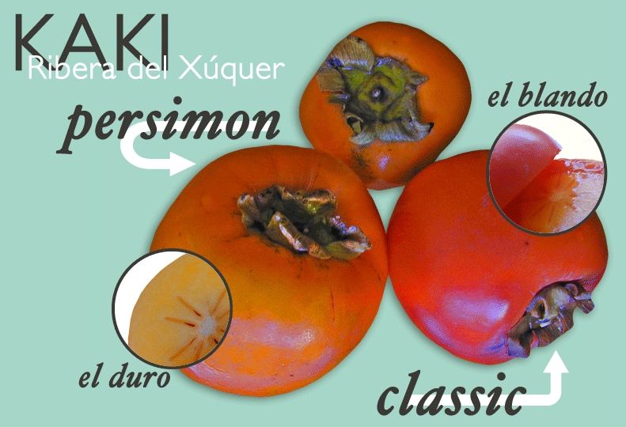
permalink
"Panoramio del pasado"
Friday, November 21, 2008
Yeah, it's pretty empty thus far...But what a fantastic idea & well-executed interface: HistoGrafica. Gracias, otra vez, a alpoma.permalink
2 legit
Thursday, November 20, 2008
Up2Maps was just released today. In the vein of Maker!, it aims to offer online geovisualization & publishing. The interface is pretty clean and intuitive, but I can't say too much about the functionality as it doesn't appear that the My Maps (this isn't trademarked?) tab is implemented yet. The data input is designed for thematic mapping, allowing users to attach spreadsheets to features - either with a "Data Greed"(!) or by manual (yawn) entry.My tentative kvetch: I don't see how you can use data that others have input, as it seems each "report" starts with a bare map and that the only export options are .png images. I hope I'm missing something?
Ultimately, what makes Maker! brilliant is that it's paired with Finder!. Together they facilitate extremely user-friendly data discovery, access and reuse...but, in doing so, set a high bar for other applications.
permalink
Usability rant
Thursday, November 20, 2008
If you, by any chance, had a question about Cartografica (can I add WMS servers?), after you downloaded the free preview this morning, you might feel my pain. The help menu is kind of skimpy, but that wouldn't deter you - maybe something online? Nothing promising on macgis.com, where you downloaded the demo. You might perform a search on Google and find this. What a thorough survey, you'd think, maybe cartografica.com has some substantial information. You wouldn't hold it against anyone that the download page was hosted on a different domain with no link, just an oversight.Shucks, no documentation and the forums are empty. Still, perfectly understandable for a project is in it's infancy. So maybe you'd just register. Only this presents a small conundrum. Aww. Poor guys, a little glitch. You understand that, because maybe you've tried designing a website recently (haha). You'd think that you should help them out, let them know about the bug since they probably have a lot of visitors on this, the first day of their release. So: contact. Where's the link? Ohh! No link. Maybe hidden on some other page? Nope...Doesn't it kind of feel like you're being taunted by that slogan on the banner?
Maybe you could post a comment, I mean, they should know about this, right? Ohh! No posting 'til you register.
Well then.
permalink
You are here.
The pinnacle of geekery
Wordpress site
Wednesday, November 12, 2008
I've set up a site and skidded through a crash course on GeoXML, Geopress, and Wordpress. Dreamweaver became a little unwieldy, so I've been using a razor-sharp combination of CSSEdit, BBEdit, and Firebug.I realize that the new site looks kind of empty - it's really just my CSS tweaks on a Wordpress template. But it has a lot more structure to work with than what I had with the first site. Oh, and no more "Farm2.0," as fun as that was. AlimentaValencia works well for now.
alimentar verbo transitivoMeanwhile, getting completely sidetracked here.
1. ‹persona/animal› to feed
2. a. ‹ilusión/esperanza› to nurture, cherish;
‹ego› to boost
b. ‹odio/pasión› to fuel
3. ‹máquina/motor› to feed;
‹caldera› to stoke
verbo intransitivo
to be nourishing
permalink
And the winner is...Robert Palmer?
Wednesday, November 12, 2008
Gary Becker, after doubtlessly brilliant studies on gambling, consumption, cigarettes, and drugs, believes people are the most addictive thing on Earth. Very sweet but kind of groan-inducing. Comments 1 through about 11 are hilarious and astute. Then, as usual, it gets redundant. And someone is still stuck on air. Ugh.permalink
Addiction
Tuesday, November 11, 2008
"What is the most addictive thing on Earth ?" Steven Levitt asked yesterday. Levitt was initially dubious about Nobel laureate economist Gary Becker's "most addictive good," but now endorses the expert's judgment and challenges his readers to give it a stab. Readers' responses fall largely into three main categories:Things people need - namely oxygen, food, water, sleep. These answers don't distinguish between "critical" and "addictive," instead opting to uncover a clever, trick answer from the array of physiological human necessities.
Things that are demonstrably addictive - e.g. gambling, sex, sugar, cigarettes. These range from substances that are extremely addictive in a physical sense, like heroin, to addictive behaviors such as shopping. While the medical community will be perpetually hashing out the scientific validity of these addictions, I'm inclined to just accept them all as potential contenders. The problem is that they're highly personal answers - no one would deny that coffee is addictive, but it surely isn't the most addictive thing on Earth. I've watched many a friend struggle desperately with nicotine addiction, for example, but was myself able to stop smoking cold turkey with nary a craving. (Which is definitely not to imply that I don't have my own battles, ahem, Scrabulous...)
Outliers - or everything I am too lazy to categorize. Many of these are abstract concepts such as happiness, power, and greed. Others are simply quirky confessions: World of Warcraft, checking myspace, Chik-Fil-A, season 2 of The Office, fivethirtyeight.com. Others are really, really, just outliers - some funny, some baffling: indoor plumbing, Nobel prizes, "Easy Access to Information so you don’t have to think [sic]," "utility maximization," story, etc.
Admittedly, I was too busy ruling out answers to come up with a good one of my own.
What surprised me, though maybe it shouldn't have considering the particular Freakonomics-blog-audience, was the number of people who said information/access to information/instant information. I would hardly try to convince anyone that this is the most addictive thing on Earth, but it's definitely a weakness I relate to at the moment.
permalink
Maya Lin's shiftable maps
A great post
Sunday, November 9, 2008
City Maps As A Rorschach Test. I, too, quickly conjured the Albanian flag from the Dallas silhouette.permalink
Measuring the drapes?
Friday, November 7, 2008
I promised myself today I'd get back to work on my thesis, but I really couldn't let the launch of change.gov go by unacknowledged. It's no news that Obama's campaign has been extremely tech savy - incredibly productive social networking, outrageous amounts of online donations, crisp design and usability - even GIS for change(whoa!).A stark contrast to McCain, who claims he has "never felt the particular need to email."
Yet even if you saw it coming, it's pretty cool that change.gov is already deployed. From first glance, it's notable that they are soliciting input, articulating their agenda, and hiring. Sure, it feels a bit gratuitous and thus far lacks much substance. The GSA Transition link that appears on every page, for instance, directs to an off-site tangle of PDF files, many of which don't really seem to reflect any sort of transition and simply list posts from the current administration.
Still, an federal administration that harnesses the power of the net-roots is a pretty awesome prospect.
permalink
Texas: back to blue?
Wednesday, November 5, 2008
We 80's babies have always known Texas as mound of electoral votes automatically handed to the GOP, but it was not always so. Texas was once a bastion of blue, part of the "Solid South." (Here's your historical election map carto-refresher.)Come 2004, however, we all knew Texas would go red.
I have a vivid recollection of that election night: About 70 people in our house, tons of vegetarian Tex-Mex snacks, a keg of Real Ale supplemented by a fridge full of Lone Star - we even brought out the TV for the occasion...It's painful to remember how confidently we were expecting to celebrate the toss out of you-know-who. As the night wore on and the whole disaster unfolded, I kept catching flashes of the Texas map on the news. There it was, my first vote in a presidential campaign, stranded on the little blue island of Travis county amidst a hopeless wash of crimson.
Obviously, I learned my lesson and re-registered in NM this time around.
Nonetheless, it warms my heart to see the Texas county map this year.
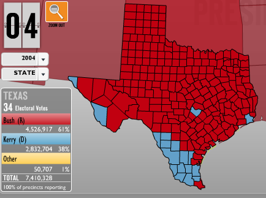
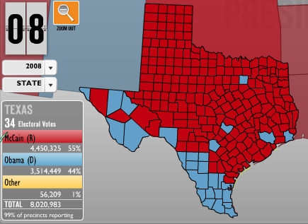
Besides scoring a bluer frontera, Obama also reigned in Dallas, Houston, and San Antonio. Even Clinton, who also mustered 43.8% in '96, missed the metros.
permalink
¿Y por aqui?
Wednesday, November 5, 2008
Zapatero: "...la victoria electoral de Barak Obama abre un nuevo periodo de esperanza..."
Comments on elpais.com, Re Bush's "smooth transition" outreach: "Lo mejor sería que no hiciera absolutamente nada, que se vaya a su rancho, que invite a Aznar y se dediquen durante un par de mese a la caza." (It would be best [for Bush] to do absolutely nothing, for him to go to his ranch and invite Aznar and they could hunt for a couple months.)
permalink
Which is a better map?
Monday, November 3, 2008
Two approaches to the same information:Local Poll Closing Times - CNN.com
Poll Closing Times - NYTimes.com
dynamic v. static
single map v. multiples
numeric/literal temporal symbols 6 p.m. v. graphic temporal symbols clock faces
generalization choices
selection time zones? Alaska & Hawaii? state name labels?
simplification both assign a color symbol per-state; CNN acknowledges intra-state variation (e.g. Indiana) with a mouse-over detail.
Etc.: The bar on the right hand side of the CNN map is a little strange looking, but does a good job of dealing with ever-troublesome, cramped Northwest labeling (no arrows necessary). It also makes mouse-over info windows more accessible for small states like Delaware.
What about these?
Swing State Project's map, though completely static, shows an great deal of information with impressive legibility.
Talking Points Memo's map flash map is dynamic to the degree that it shows no polling time information without the user mousing over the time bar at the top - a little counter intuitive for me since I usually expect flash maps to react movement above the geographic features themselves. Interesting effect from the beige(open)/green(closing)/grey(closed) palette as one moves across the bar.
Is 1.0 retro-chic yet? Check out 2004.
permalink
Unbelievable anxiety + procrastination
Tuesday, November 4, 2008
Thanks for the compassion, William Kristol. But lets face it: If this gets screwed up, I'm not going home unless California secedes. Or maybe Northern NM could become New New Mexico? Faithy does claim that Obamanos is HUGE in Española. And she would know - here she is advising Mr. Obama earlier this fall (might have to enable pop-up windows for the player):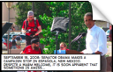
Now look who's up 7 percentage points. That's what happens when you do what my sister tells you to.
(in case you need clarification: Hillary's health plan, the Scoville scale, Horseman's Haven, level three...)
For anyone else who's abroad without TV, the Times promises to update their map every 3 minutes, and this should help sort out time differences.
permalink
Great presentations
Friday, October 31, 2008
My father always told me, "Absolute power corrupts, absolute PowerPoint corrupts absolutely." Hypocritically, of course, since he is a veteran Keynote user himself. I have a vivid recollection of sitting in on some sort of investors meeting where my father closed his presentation with a clip of the Globe scene from the Great Dictator. Did I mention he replaced the audio with Cantaloop and started dancing "funky" along with a couple of his board members? I'm sure I found it mortifying at the time, but I appreciate his little mash-up in retrospect. And am sure everyone else in the audience...Well I'm sure they didn't fall asleep.Unfortunately, this past year I've seen a lot of slides like this, slides that I would go so far as to say harm their cause. Doesn't interoperability look like a nightmare? Piles of clip art do not exactly make a nice visual metaphor for standard-driven data overlays.
Which is a perfect segue into announcing the best presentation I've seen in a long time: Dave Bouwman's Usability in the Geoweb presentation from the Texas GIS Forum. The presentation communicates a concise, convincing argument with smart, humorous, clean design. Sadly, this is the third year in a row that I have missed the forum. It's organized by TNRIS, my former employer, and while I suppose I could derive consolation from my various editions of GIS Forum totes and water bottles, I'm still a little envious...
On the other hand, I was able to watch Andrew Turner's excellent webcast last week. They said they'd be posting the video, but until then, this should tide you over. Both presentations prompted me to check back in on geocommons. I had played around with Finder when it was first released, but didn't realize how much it has developed. And Maker really seems to be a worthy model of the kind of applications Mr. Bouwman appeals for.
All this inspired me to upload some of my old presentations to Slideshare:
My undergraduate thesis from UT. Brace yourself. My awesome professor, Dr. Leo Zonn, specializes in the geography of cinema. After a grueling semester of intensive remote sensing and advanced GIS, I was absolutely reveling in cultural theory. My take on it was little overboard maybe, but fun. Makes me miss Wheatsville.
Some presentations that I made for a history of interior design class I took with an extra credit that same spring. These bring back especially fond memories since I was very outnumbered by a swarm of Dallas/ Houston-bred Shopping- er, "Interior Design" majors. We seriously took a field trip to Design Within Reach.
And some presentations from my past semester in Münster: Two on spatial cognition. A usability study. And a requirements analysis for context adaptive digital signage (which was miserable to perform - imagine me recording interviews about maps with German pedestrians).
Slideshare is awesome. I kind of doubt there is much of an audience for any of these, but who knows. They're much more useful there than simply saved to a CD.
permalink
Wisdom of the folks as sensors;
tag-alicious-onomy
tag-alicious-onomy

{kind=link}
{kind=link}
{kind=link}
{kind=link}
{kind=link}
database design
Thursday, October 30, 2008
Here's a database design I came up with the other day. Of course, if I use Wordpress, it would look drastically different. Still a handy exercise to consider how my data, attributes, and services are related. I'm loving the lauded 'polar bear book,' by the way.{kind=link}
permalink
Yes, we can...write a thesis
Wednesday, October 29, 2008
I know it might appear that the election is distracting me...but I am hard at work. It's just that I'm trying a new approach to my whole implementation, and developing locally - so there's not much to show yet.After my professor suggested putting more emphasis on the consumer/tourist/chef end of the idea, I started to wonder if I wasn't going to need a CMS to manage accounts, ratings, comments, and user-contributed recipes. I spent a couple days trying to convince myself I could learn Drupal (someday, not now) before considering Wordpress. It's hardly a blogs-only platform - in fact many designers use it to create more traditional websites so that their clients can largely manage content themselves. Sounds ideal, since, in theory, I would want to pass off authorship of the project to the regulatory committees that certify products.
I spent several days sorting through all the Google Maps plug-ins, finally settling on Wordpress Geomashup. It seems to be the most flexible and is very well documented. (Bonus points because the developer maps his biking and hiking from Santa Fe.) This implementation guide is also highly recommended.
I'm still not positive about the whole set up, but it does look promising. With the shifted emphasis, the end user will probably be a cook rather than a farmer. Consequently, the name "Farm2.0" is really misleading. I'll try to come up with something equally hokey to replace it.
permalink
Guess who's reading Michael Pollan?
Wednesday, October 28, 2008
"...our entire agricultural system is built on cheap oil. As a consequence, our agriculture sector actually is contributing more greenhouse gases than our transportation sector. And in the mean time, it's creating monocultures that are vulnerable to national security threats, are now vulnerable to sky-high food prices or crashes in food prices, huge swings in commodity prices, and are partly responsible for the explosion in our healthcare costs..."permalink
Ha ha
Creative Cartograpies/DUMBO
Saturday, October 18, 2008
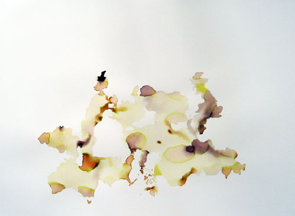Rachelle Cohen, A New Eden?, 2008
I would love to see this exhibit in person.
I especially love Rachelle Cohen's two "condensed" watercolors of conglomerate nations. She's produced by them by arranging geometries of the statistically happiest and greenest countries.
With the whole unexpected-embroidery-themes movement, you had to guess it was only a matter of time before someone did this:
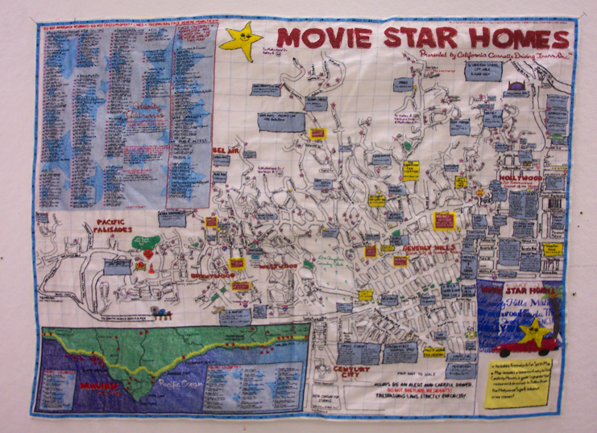
Gina Dawson, Movie Star Homes, 2005
But its great nonetheless, right? (In all fairness note that the piece is from 2005 when ironic crafting wasn't yet so trendy.)
Actually, the whole show looks interesting.
permalink
The other cybercartography...
Thursday, October 16, 2008
That is, the cartography of cyberspace. The book is out of print and the project has been discontinued, but the authors have graciously made the whole thing available for download under a Creative Commons license. 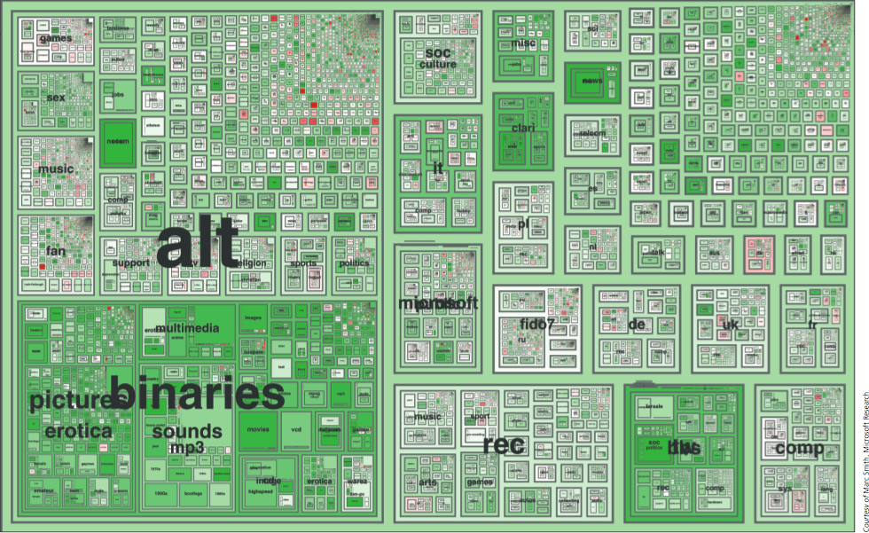4.9: Netscan treemaps of Usenet space
chief cartographers: Marc A. Smith and Andrew T. Fiore
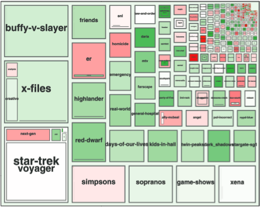
closeup of alt.tv
permalink
New video...
Thursday, October 16, 2008
Here's the latest version of my thesis slides...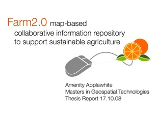
Here's the "demo" site.
permalink
Typefaces and such.
Monday, October 6, 2008
Up until this summer, I had an almost hysterical dedication to Gill Sans. Working on collaborative projects involving lots of back and forth document trading, it would pain me to use another typeface for my non-Mac partners. I usually settled for Trebuchet to ensure they wouldn't receive garbled dingbats. Sometimes I offered to complete assignments I had already spent more than my share of time on just so I could have the satisfaction of looking at the final printed product in my favorite font.For essays, of course, I grudgingly accepted the 12pt Times New Roman mandate. But on technical reports, cartography assignments, resumes, and powerpoints, I rarely deviated from Gill Sans. And when I look back at that work it does look nice, for it is a beautiful, Tufte-approved typeface.
But Germany changed me. I began to appreciate sparse, black on white presentations, and acclimate to ragged-edged alignment. I finally got my hands on the documentary I had sought since catching a preview at MOMA last summer. Swept up in the lore of Helvetica, I decided to take the plunge. I opened my farm2.0 logo, took a deep breath, and descended my font menu. I think I even winced as I passed Gill Sans.
Helvetica looked okay.
Helvetica-Neue looked great.
And Helvetica Neue Light looked phenomenal. Goodbye Gill.
Unfortunately, coordinating the CSS to be consistent between browsers and platforms is really going to require some flexibility. Helvetica Neue won't show up on Windows, as far as I can tell - but maybe Helvetica with weight adjustments can approximate it? Furthermore, having just gotten this site up, I'm starting to consider that I may have taken it all too far. Helvetica Neue is dizzying in large blocks of text, isn't it? Should I introduce a complementary sans-serif? Would normal Helvetica be preferable?
Or maybe I should just GET ON WITH IT and work on my literature review. ;)
permalink
jerkied Universe anyone?
Friday, October 3, 2008
I was just reading an argument by Goodchild & Sui that GIS now (or then, 2001) should be considered a form of media being that its ultimate goal is to communicate. The perspective fits well with my recent approach to my thesis, so I skimmed the document for juicy propositions. Then I came across:Indeed, with the emergence of digital places and digital individuals (Curry 1998), we are witnessing not only Arnold Toynbee ’s etherization of history but also the etherization of geography.The phrase has an interesting tone, so I Googled it to see if it had by any chance sparked a flurry of citations. My findings were pretty thin - this didn't seem to be another "citizens as sensors" moment for Goodchild, and original texts by Toynbee weren't coming up. I was just about to move on when - "etherealize toynbee" (the geographers seem to have transposed some letters) brought up this. Apparently Buckminster Fuller used the phrase "ephemeralization," and Mr. Fowler associates this with Bucky's iconic tensegrity spheres, "more easily caught with ever more ethereal than ever more transient forms." Hm. It really is quite a poetic piece of correspondence - but if it hadn't been CCed to my grandfather, I'm not sure I would have been curious enough to read the whole thing. But it was, and I did - thus uncovering this gem:
I've no doubt that it seems as if I'm chewing these jerkied terms over an [sic] over forever, getting no juice out other than my own saliva. But that's what needs doing.Moistening up dried and hardened (or, on the other hand, new) terms, getting teeth in between the fibers, forcing them apart and sensing Universe among them.Whoa.
permalink